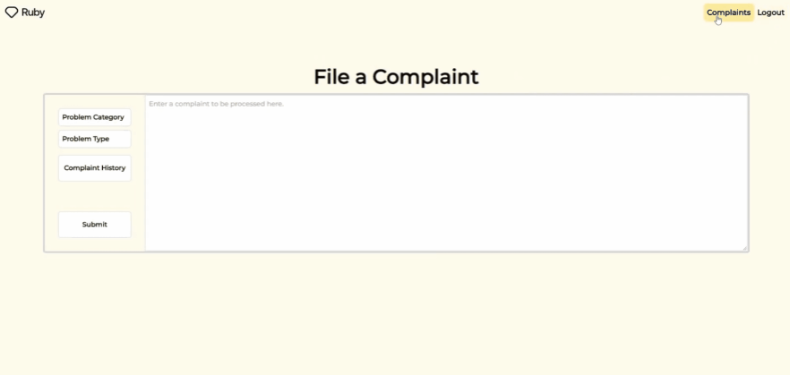

Intro
As an undergraduate at Hunter College, I am dedicated towards
learning everything I can about Computer Science. I am determined to
make my mark in the field. Thoughout my computer science journey, I
have learned that this field is equally rewarding to those who teach
and to those who learn.
I believe genuine connection is extremely important, and I can
confidently say that the social skills I have built throughout my
lifetime will allow for a smooth adaptation to any work environment.
I aspire to fulfill my passion for software development, and I hope
to build strong, diverse programming skills along the way. I'm
currently learning everything that I can, and I am open to any
opportunities involving growth in these areas.
Experience
Headstarter AI
-
Developing 5 full-stack web applications integrating AI
technologies while collaborating on a team of 4 members utilizing
React, React Native, OpenAI, StripeAPI, Firebase, AWS, and other
technologies.
-
Coached by engineers at industry giants such as Amazon, Bloomberg,
and Capital One on Agile, CI/CD, Git and microservice patterns.
CodePath
-
Collaborated on a team of 4 using appropriate data structures and
algorithms to solve, and later optimize, challenging coding
problems.
-
Became proficient in advanced problem solving techniques,
enhancing my ability to write clean and scalable code and
strengthening my performance developing real world applications.
Teachers Assistant
-
Reinforced and broadened my proficiency in computer science by
delivering clear and effective instruction of core concepts.
-
Developed a deeper understanding of important data structures,
algorithms, and core concepts through hands-on teaching methods
and thorough explanation of complex topics.
Projects

Rhythma - Map Hosting For Osu Content Creators
-
Collaborated with an influencer with over 800,000 followers across
all platforms to build a full stack application for hosting and
distributing beat maps (downloadable files for additional in-game
content).
-
Addressed an ongoing issue in the influencer's community by
aggregating and displaying beat maps seen on the influencer's
social media as individual components containing a link to the map
embedded in the map name, as well as the map creator and artist.
-
Implemented a complete search feature, an optimized backend, and a
user friendly interface using React state, hook, and component
functionality, resulting in instant re-rendering of all displayed
maps based on a search field.

Spend Ruby - Complaint System
-
Developed a full-stack complaint system for a startup utilizing
the PERN stack which enables users to submit complaints regarding
specific aspects of the site.
-
Implemented an admin/employee dashboard with search filter
functionality to offer easy and instant access to all filed
complaints.

InstaRecipe - Headstarter AI Hackathon
-
Built an AI recipe generator utilizing the OpenAI API to receive
user input and respond with a recipe according to the users
ingredients.
-
Utilized JavaScript, React Native to develop the frontend, and
express/axios to develop the backend and handle routes.
Contact Me